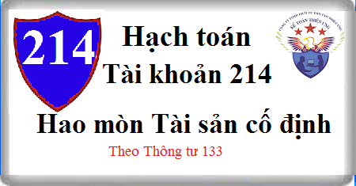

Hướng dẫn cách hạch toán Tài khoản 214 theo Thông tư 133, cách hạch toán Hao mòn Tài sản cố định, cách hạch toán trích khấu hao tài sản cố định, hạch toán giảm TSCĐ …
1. Nguyên tắc kế toán Tài khoản 214 - Hao mòn tài sản cố định
a) Tài khoản này dùng để phản ánh tình hình tăng, giảm giá trị hao mòn và giá trị hao mòn lũy kế của các loại TSCĐ và bất động sản đầu tư (BĐSĐT) trong quá trình sử dụng do trích khấu hao TSCĐ, BĐSĐT và những khoản tăng, giảm hao mòn khác của TSCĐ, BĐSĐT.
b) Về nguyên tắc, mọi TSCĐ, BĐSĐT dùng để cho thuê của doanh nghiệp có liên quan đến sản xuất, kinh doanh (gồm cả tài sản chưa dùng, không cần dùng, chờ thanh lý) đều phải trích khấu hao theo quy định hiện hành. Khấu hao TSCĐ dùng trong sản xuất, kinh doanh và khấu hao BĐSĐT được hạch toán vào chi phí sản xuất, kinh doanh trong kỳ; khấu hao TSCĐ, BĐSĐT chưa dùng, không cần dùng, chờ thanh lý thực hiện theo quy định của pháp luật hiện hành. Đối với TSCĐ dùng cho mục đích phúc lợi thì không phải trích khấu hao tính vào chi phí sản xuất, kinh doanh mà chỉ tính hao mòn TSCĐ và hạch toán giảm nguồn hình thành TSCĐ đó.
c) Căn cứ vào quy định của pháp luật và yêu cầu quản lý của doanh nghiệp để lựa chọn 1 trong các phương pháp tính, trích khấu hao theo quy định của pháp luật phù hợp cho từng TSCĐ, BĐSĐT nhằm kích thích sự phát triển sản xuất, kinh doanh, đảm bảo việc thu hồi vốn nhanh, đầy đủ và phù hợp với khả năng trang trải chi phí của doanh nghiệp.
Phương pháp khấu hao được áp dụng cho từng TSCĐ, BĐSĐT phải được thực hiện nhất quán và có thể được thay đổi khi có sự thay đổi đáng kể cách thức thu hồi lợi ích kinh tế của TSCĐ và BĐSĐT.
Xem thêm: Các phương pháp trích khấu hao TSCĐ
d) Thời gian khấu hao và phương pháp khấu hao TSCĐ phải được xem xét lại ít nhất là vào cuối mỗi năm tài chính. Nếu thời gian sử dụng hữu ích ước tính của tài sản khác biệt lớn so với các ước tính trước đó thì thời gian khấu hao phải được thay đổi tương ứng. Phương pháp khấu hao TSCĐ được thay đổi khi có sự thay đổi đáng kể cách thức ước tính thu hồi lợi ích kinh tế của TSCĐ. Trường hợp này, phải điều chỉnh chi phí khấu hao cho năm hiện hành, các năm tiếp theo và phải thuyết minh trong Báo cáo tài chính.
Xem thêm: Khung thời gian trích khấu hao TSCĐ
đ) Đối với các TSCĐ đã khấu hao hết (đã thu hồi đủ vốn) nhưng vẫn còn sử dụng vào hoạt động sản xuất, kinh doanh thì không được tiếp tục trích khấu hao. Các TSCĐ chưa tính đủ khấu hao (chưa thu hồi đủ vốn) mà đã hư hỏng, cần thanh lý thì phải xác định nguyên nhân, trách nhiệm của tập thể, cá nhân để xử lý bồi thường và phần giá trị còn lại của TSCĐ chưa thu hồi, không được bồi thường phải được bù đắp bằng số thu do thanh lý của chính TSCĐ đó, số tiền bồi thường do lãnh đạo doanh nghiệp quyết định. Nếu số thu thanh lý và số thu bồi thường không đủ bù đắp phần giá trị còn lại của TSCĐ chưa thu hồi, hoặc giá trị TSCĐ bị mất thì chênh lệch còn lại được coi là lỗ về thanh lý TSCĐ và kế toán vào chi phí khác.
e) Đối với TSCĐ vô hình, phải tùy thời gian phát huy hiệu quả để trích khấu hao tính từ khi TSCĐ được đưa vào sử dụng (theo hợp đồng, cam kết hoặc theo quyết định của cấp có thẩm quyền).
g) Đối với TSCĐ thuê tài chính, trong quá trình sử dụng bên đi thuê phải trích khấu hao trong thời gian thuê theo hợp đồng tính vào chi phí sản xuất, kinh doanh, đảm bảo thu hồi đủ vốn.
h) Đối với BĐSĐT cho thuê hoạt động phải trích khấu hao và ghi nhận vào giá vốn hàng bán trong kỳ. Doanh nghiệp có thể dựa vào các BĐS chủ sở hữu sử dụng (TSCĐ) cùng loại để ước tính thời gian trích khấu hao và xác định phương pháp khấu hao BĐSĐT. Trường hợp BĐSĐT nắm giữ chờ tăng giá, doanh nghiệp không trích khấu hao mà xác định tổn thất do giảm giá trị. Khi có bằng chứng chắc chắn cho thấy BĐSĐT tăng giá trở lại thì doanh nghiệp được điều chỉnh tăng nguyên giá BĐSĐT nhưng tối đa không vượt quá nguyên giá ban đầu của BĐSĐT.
2. Kết cấu và nội dung tài khoản 214 - Hao mòn TSCĐ
Bên Nợ: Giá trị hao mòn TSCĐ, BĐSĐT giảm do TSCĐ, BĐSĐT thanh lý, nhượng bán, điều động cho đơn vị hạch toán phụ thuộc, góp vốn đầu tư vào đơn vị khác,...
Bên Có: Giá trị hao mòn TSCĐ, BĐSĐT tăng do trích khấu hao TSCĐ, BĐSĐT,...
Số dư bên Có: Giá trị hao mòn lũy kế của TSCĐ, BĐSĐT hiện có cuối kỳ ở doanh nghiệp.
Tài khoản 214 - Hao mòn TSCĐ, có 4 tài khoản cấp 2:
- Tài khoản 2141 - Hao mòn TSCĐ hữu hình: Phản ánh giá trị hao mòn của TSCĐ hữu hình trong quá trình sử dụng do trích khấu hao TSCĐ và những khoản tăng, giảm hao mòn khác của TSCĐ hữu hình.
- Tài khoản 2142 - Hao mòn TSCĐ thuê tài chính: Phản ánh giá trị hao mòn của TSCĐ thuê tài chính trong quá trình sử dụng do trích khấu hao TSCĐ thuê tài chính và những khoản tăng, giảm hao mòn khác của TSCĐ thuê tài chính.
- Tài khoản 2143 - Hao mòn TSCĐ vô hình: Phản ánh giá trị hao mòn của TSCĐ vô hình trong quá trình sử dụng do trích khấu hao TSCĐ vô hình và những khoản làm tăng, giảm hao mòn khác của TSCĐ vô hình.
- Tài khoản 2147 - Hao mòn BĐSĐT: Tài khoản này phản ánh giá trị hao mòn BĐSĐT trong quá trình cho thuê hoạt động và những khoản làm tăng, giảm hao mòn khác của BĐSĐT.
3. Cách hạch toán Hao mòn tài sản cố định Tài khoản 214:
a) Định kỳ tính, trích khấu hao TSCĐ vào chi phí sản xuất, kinh doanh, chi phí khác, ghi:
Nợ các TK 154 Chi phí sản xuất kinh doanh dở dang hoặc
Nợ các Tài khoản 642, 811...
Có TK 214 - Hao mòn TSCĐ (TK cấp 2 phù hợp).
Xem thêm: Cách tính khấu hao tài sản cố định
b) Định kỳ tính, trích khấu hao BĐSĐT đang cho thuê hoạt động, ghi:
Nợ TK 632 - Giá vốn hàng bán (chi tiết chi phí kinh doanh BĐS đầu tư)
Có TK 214 - Hao mòn TSCĐ (2147).
c) Trường hợp giảm TSCĐ, BĐS đầu tư thì đồng thời với việc ghi giảm nguyên giá TSCĐ phải ghi giảm giá trị đã hao mòn của TSCĐ, BĐSĐT (xem hướng dẫn hạch toán các TK 211, 213, 217).
Chi tiết xem tại đây: Tài khoản 211 Tài sản cố định
d) Đối với TSCĐ dùng cho hoạt động sự nghiệp, dự án, khi tính hao mòn vào thời điểm cuối năm tài chính, ghi:
Nợ TK 3533 – Qũy phúc lợi hình thành TSCĐ (TK 353 Quỹ khen thưởng, phúc lợi)
Có TK 214 - Hao mòn TSCĐ.
đ) Trường hợp vào cuối năm tài chính doanh nghiệp xem xét lại thời gian trích khấu hao và phương pháp khấu hao TSCĐ, nếu có sự thay đổi mức khấu hao cần phải điều chỉnh số khấu hao ghi trên sổ kế toán như sau:
- Nếu do thay đổi phương pháp khấu hao và thời gian trích khấu hao TSCĐ, mà mức khấu hao TSCĐ tăng lên so với số đã trích trong năm, số chênh lệch khấu hao tăng, ghi:
Nợ các TK 154, 642, 811 ... (số chênh lệch khấu hao tăng)
Có TK 214 - Hao mòn TSCĐ (TK cấp 2 phù hợp).
- Nếu do thay đổi phương pháp khấu hao và thời gian trích khấu hao TSCĐ, mà mức khấu hao TSCĐ giảm so với số đã trích trong năm, số chênh lệch khấu hao giảm, ghi:
Nợ TK 214 - Hao mòn TSCĐ (TK cấp 2 phù hợp)
Có các TK 154, 642, 811 ... (số chênh lệch khấu hao giảm).
---------------------------------
Kế toán Diệu Tâm xin chúc các bạn thành công! Xem thêm tất cả các quy định về TSCĐ tại DN: Quy định về tài sản cố định
